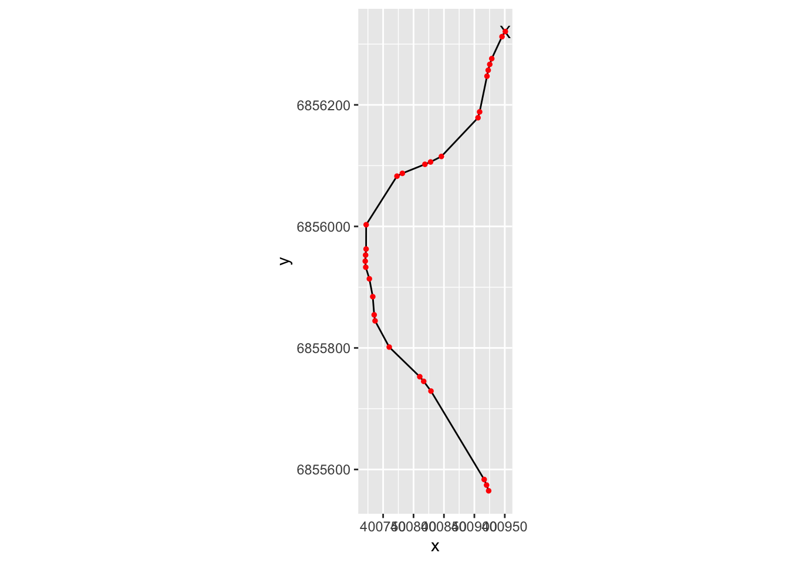
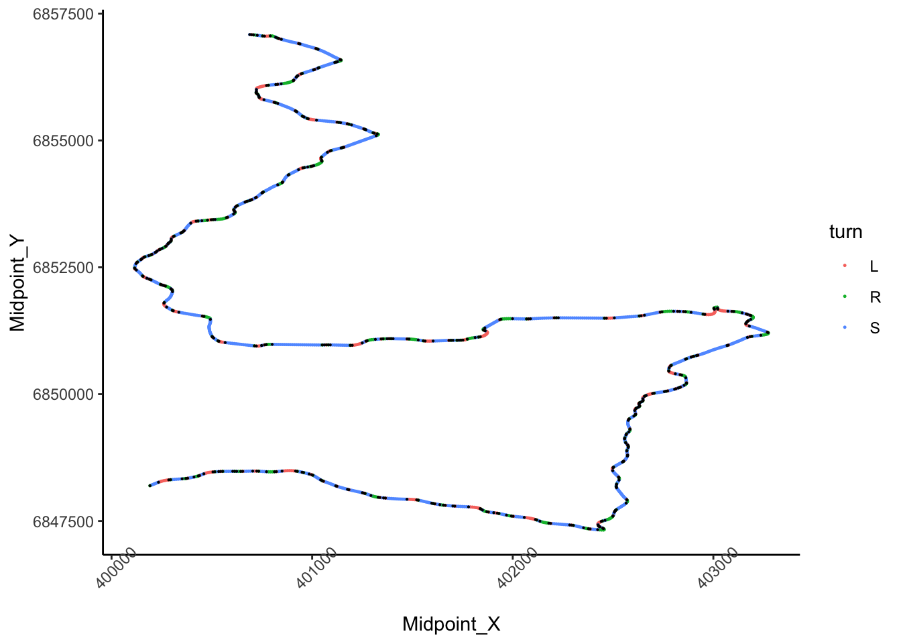

19 Numbering Corners
cornerer = function (df, slight_conv=0.02, closeby=25){
df %>%
mutate(straightish = (abs(ConvexityIndex) < slight_conv)) %>%
mutate(dirChange = (sign(ConvexityIndex) != sign(lag(ConvexityIndex,2))
)
# | (straightish & !lag(straightish) ) | (!straightish & lag(straightish))
) %>%
mutate(turn= ifelse( straightish, "S", ifelse(ConvexityIndex<0, "L", "R"))) %>%
# If we are on R or L and then we go to S11, we need call a slight L or R
mutate(turn = ifelse(turn!="S" & lag(turn)=="S", ifelse(turn=="R", "L","R"), turn)) %>%
mutate(s2 = replace_na(turn!=lag(turn), TRUE) ) %>%
mutate(streak_id=cumsum(s2)) %>% group_by(streak_id) %>% mutate(streak=row_number()) %>%
ungroup()
}
xx = cornerer(route_convexity)
yy = xx %>% group_by(streak_id) %>%
mutate(invisible_ci = min(invisible_ci), kmsection=min(kmsection)) %>%
mutate(x=head(Midpoint_X,1), y=head(Midpoint_Y,1)) %>%
filter(row_number()==n())
#mutate(txt = ifelse(invisible_ci>9 & turn!="S",
# paste("slight ",turn, as.character(10*streak)),
# ifelse(turn=="S", as.character(10*streak), "")),
# txt=ifelse(paste(txt, paste0(invisible_ci, streak, turn), sep=", "))
# )
#
xx## # A tibble: 1,806 × 25
## FID RID MidMeas WindowSize RawConvexity ConvexityIndex Sinuosity
## <int> <chr> <dbl> <dbl> <dbl> <dbl> <dbl>
## 1 1 SS7/11 Kakari… 10 20 0.043 0.004 0.5
## 2 1 SS7/11 Kakari… 20 20 0.226 0.023 0.5
## 3 1 SS7/11 Kakari… 30 20 0.415 0.041 0.501
## 4 1 SS7/11 Kakari… 40 20 0.276 0.028 0.5
## 5 1 SS7/11 Kakari… 50 20 0.124 0.012 0.5
## 6 1 SS7/11 Kakari… 60 20 -0.015 -0.002 0.5
## 7 1 SS7/11 Kakari… 70 20 -0.191 -0.019 0.5
## 8 1 SS7/11 Kakari… 80 20 -0.405 -0.04 0.501
## 9 1 SS7/11 Kakari… 90 20 -1.17 -0.117 0.506
## 10 1 SS7/11 Kakari… 100 20 -1.94 -0.194 0.512
## # … with 1,796 more rows, and 18 more variables: Midpoint_X <dbl>,
## # Midpoint_Y <dbl>, dist <dbl>, cum_dist <dbl>, radius <dbl>,
## # invisible_ci <ord>, invisible_sp <int>, acc_sp <dbl>, segment_sp <dbl>,
## # invisible_time <dbl>, acc_time <dbl>, kmsection <dbl>, straightish <lgl>,
## # dirChange <lgl>, turn <chr>, s2 <lgl>, streak_id <int>, streak <int>xx %>% filter(kmsection==2) %>% select(straightish, dirChange, turn, invisible_ci)## # A tibble: 100 × 4
## straightish dirChange turn invisible_ci
## <lgl> <lgl> <chr> <ord>
## 1 TRUE TRUE S 11
## 2 TRUE TRUE S 11
## 3 TRUE TRUE S 11
## 4 TRUE TRUE S 11
## 5 TRUE FALSE S 11
## 6 FALSE FALSE R 11
## 7 FALSE FALSE L 11
## 8 FALSE FALSE L 11
## 9 FALSE FALSE L 11
## 10 FALSE FALSE L 11
## # … with 90 more rowsyy = yy %>% mutate(txt = ifelse(invisible_ci>9 & turn=="S",paste(streak*10),
ifelse(invisible_ci>9, paste("slight",turn, streak*10),
paste(paste0(streak, invisible_ci), turn)))) %>%
select(kmsection, invisible_ci, turn, streak_id, streak, txt, x, y)
#
zz= yy %>% group_by(kmsection) %>%
summarise(txt=paste(txt, collapse=", "))
zz## # A tibble: 19 × 2
## kmsection txt
## <dbl> <chr>
## 1 1 10, slight L 10, slight R 20, 30, slight R 10, 34 L, 43 R, 20, sli…
## 2 2 slight R 10, slight L 40, 10, slight R 10, slight L 10, 60, slight…
## 3 3 slight R 10, slight L 10, 30, slight R 10, slight L 50, 110, sligh…
## 4 4 slight R 10, slight L 30, 100, slight R 10, 59 L, 10, slight L 10,…
## 5 5 slight L 10, 40, slight L 10, slight R 10, 20, slight R 10, slight…
## 6 6 30, slight L 10, 28 R, 20, slight R 10, slight L 10, 40, slight L …
## 7 7 slight L 10, slight R 60, 20, slight L 10, slight R 30, 220, sligh…
## 8 8 slight R 10, slight L 20, 60, slight R 10, 47 L, 160, slight R 10,…
## 9 9 slight L 10, slight R 50, 30, slight L 10, slight R 20, 10, slight…
## 10 10 18 L, 65 R, 70, slight R 10, slight L 10, 120, slight L 10, slight…
## 11 11 70, slight R 10, 144 L, 10, slight L 10, 51 R, 10, 19 R, 76 L, 20,…
## 12 12 50, slight R 10, 26 L, 180, slight L 10, 240, slight L 10, 20, sli…
## 13 13 100, slight L 10, 48 R, 40, slight L 10, slight R 10, 20, slight L…
## 14 14 slight L 10, slight R 50, 40, 19 R, slight L 10, 60, slight R 10, …
## 15 15 slight L 10, slight R 50, 80, slight R 10, 40, slight R 10, slight…
## 16 16 slight R 10, 78 L, 20, 17 R, 17 L, 30, slight L 10, 61 R, 40, slig…
## 17 17 70, slight L 10, 40, slight L 10, slight R 20, 30, slight L 10, sl…
## 18 18 slight R 10, slight L 20, 40, slight R 10, 30, slight R 10, slight…
## 19 19 slight R 10#yytmp_data = yy %>% filter(kmsection==2)
tmp_data2 = xx %>% filter(kmsection==2)
ggplot(tmp_data2) + geom_text(data=head(tmp_data2, 1),aes(x=Midpoint_X, y=Midpoint_Y),label="X" , color="green") +
geom_path(aes(x=Midpoint_X, y=Midpoint_Y)) +
ggrepel::geom_text_repel(data=tmp_data, aes(x=x, y=y, label=txt), size=2)+
coord_fixed() + geom_point(data=tmp_data, aes(x=x, y=y)) + xlim(min(tmp_data2$Midpoint_X)-100, max(tmp_data2$Midpoint_X)+100)
zz[[2,'txt']]## [1] "slight R 10, slight L 40, 10, slight R 10, slight L 10, 60, slight L 10, 99 R, 20, slight L 10, 40, slight R 10, 106 L, 40, slight L 10, 10, 18 R, 27 L, slight R 30, 30, slight R 10, 57 L, 70, slight L 10, slight R 20, 170, slight L 10, slight R 10, 90"ggplot(tmp_data, aes(x=x, y=y))+
geom_text(data=head(tmp_data,1), label="X") +
geom_path() +
coord_fixed() +geom_point(color='red', size=1) 
ggplot(data=trj[zoom1,], aes(x=x, y=y)) + geom_path(color=‘grey’) + coord_sf() + ggrepel::geom_text_repel(data=tight_corners[tight_corners_zoom1,], aes(label = dist, x=Midpoint_X, y=Midpoint_Y), size=3) + geom_point(data=tight_corners[tight_corners_zoom1,], aes(x=Midpoint_X, y=Midpoint_Y, color= (firstish) ), size=1) + theme_classic()+ theme(axis.text.x = element_text(angle = 45))
ggplot() +
#geom_point(data=xx,
# aes(x=Midpoint_X, y=Midpoint_Y,
# ), color='pink', size=1) +
geom_point(data=xx,
aes(x=Midpoint_X, y=Midpoint_Y,color=turn), size=0.2) +
geom_point(data=xx %>% filter(s2==TRUE),
aes(x=Midpoint_X, y=Midpoint_Y
),color="black", size=0.1) +
theme_classic()+
theme(axis.text.x = element_text(angle = 45))